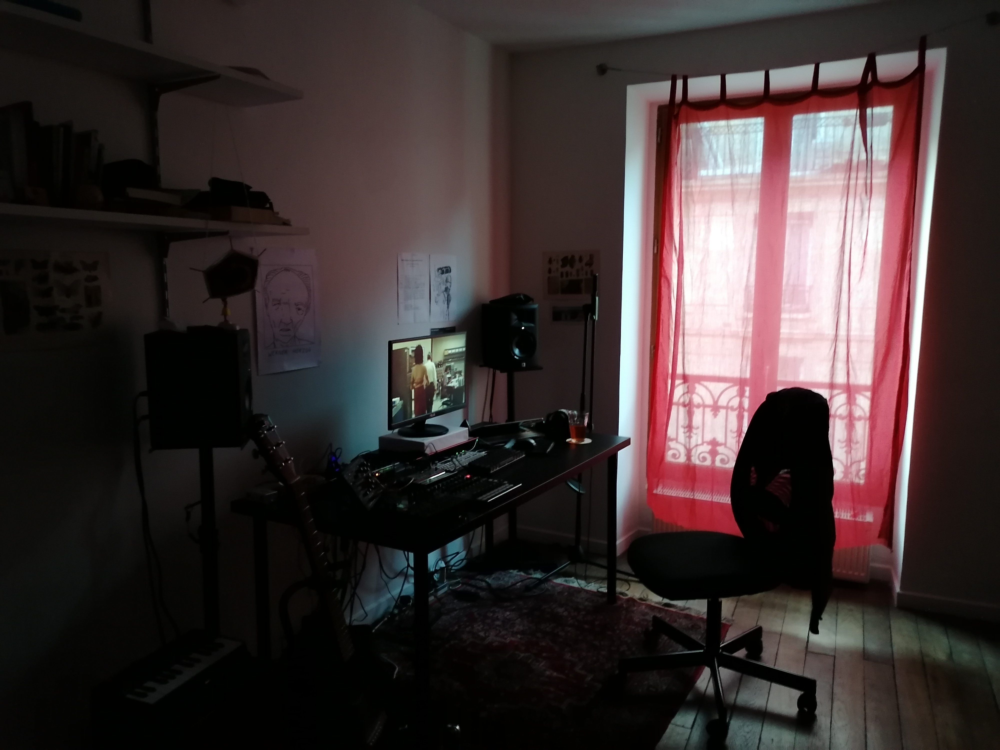
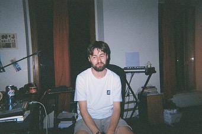

On this page you will find photos of various places I've lived over the years.
Mainly focussed around the desk / working spaces.
These photos were not necessarily taken with the intention of being shared. In fact I'm not sure why they were taken, but
its quite nice to look back on places I used to inhabit & see how my setups have changed over time.
This is my "alpine" hideaway within my apartment. This is generally where I spend most of my time and my current work area
The desk area is fairly spartan & with zero frills. No wall decorations at present.
There's also a fairly small music setup behind me. Cables dangling everywhere which never get used. And speakers I haven't bothered to plug in
A view of both the desk & music areas simultaneously. This little hideaway was clearly designed with short people in mind!
Allowed the music area to spread almost all around me in this apartment.
 A couple more views of the apartment. Including a rare shot of me at my desk
Found suprisingly little evidence of my existence here. Captured this image from a video I found in my Google drive.
From what I remember this was a very small and cluttered desk. Back in the (semi-)long hair days too.
First image shows an early music setup. The beatstep pro has long gone, as has that little piano in the background
Second image is the other side of the (quite long) room